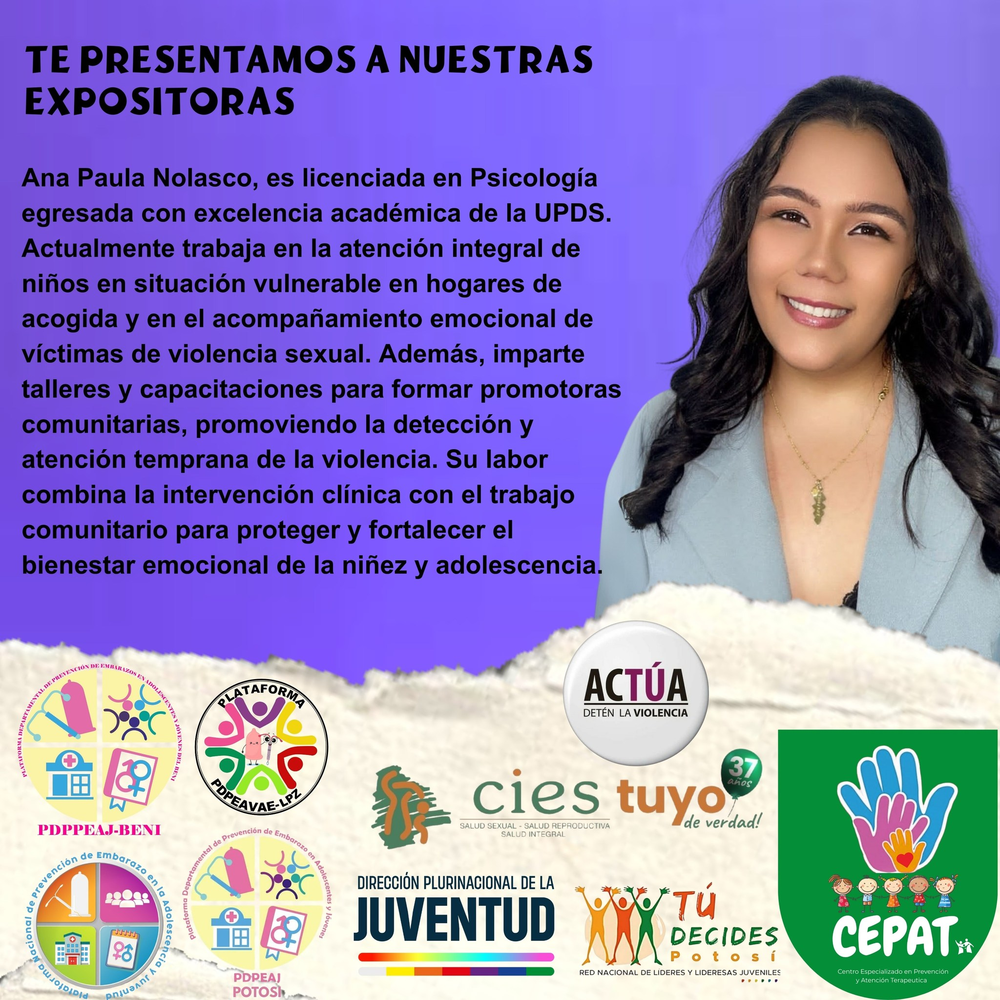
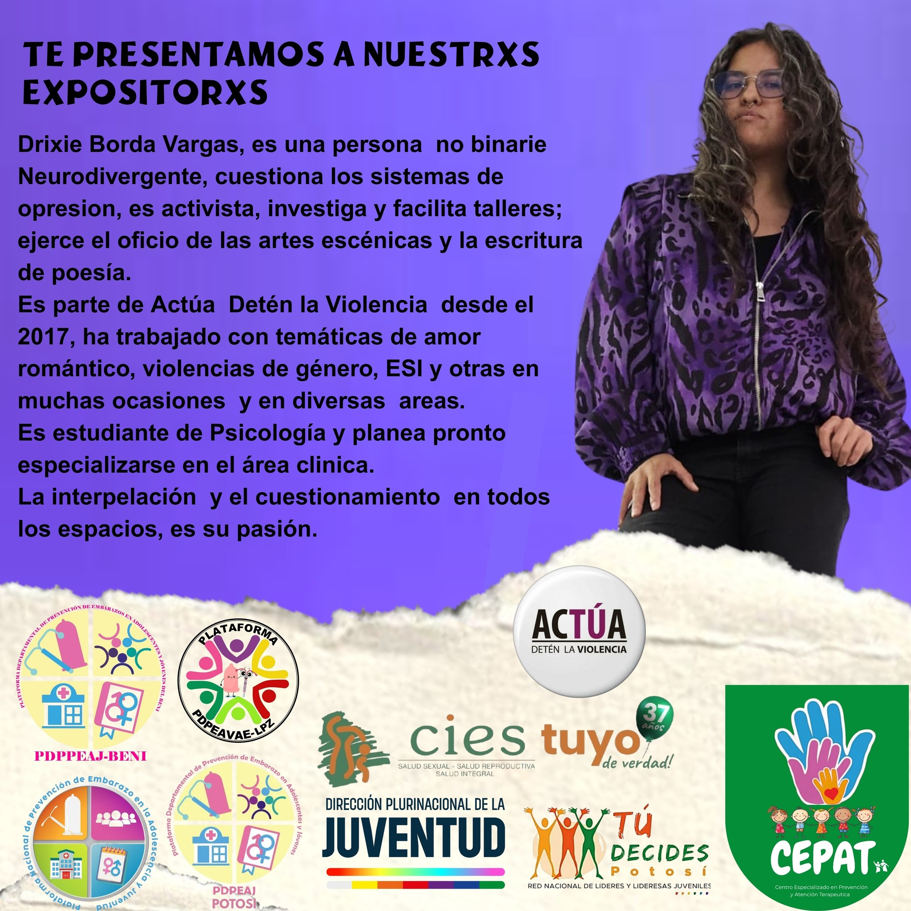
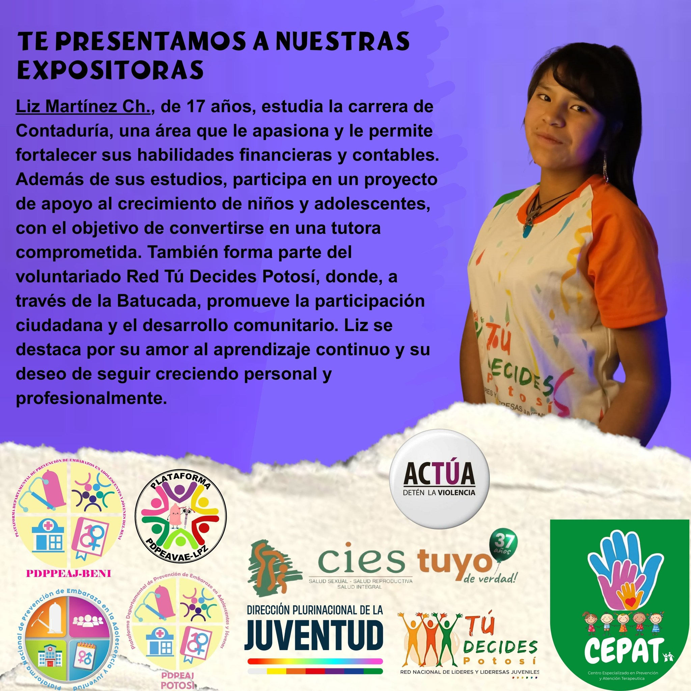
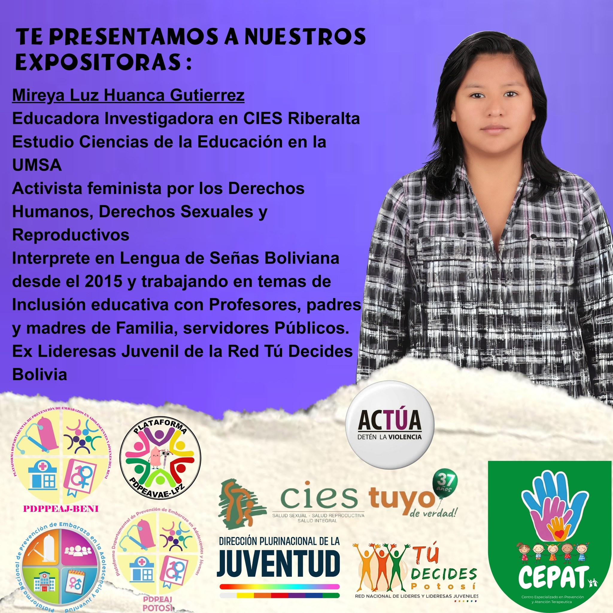
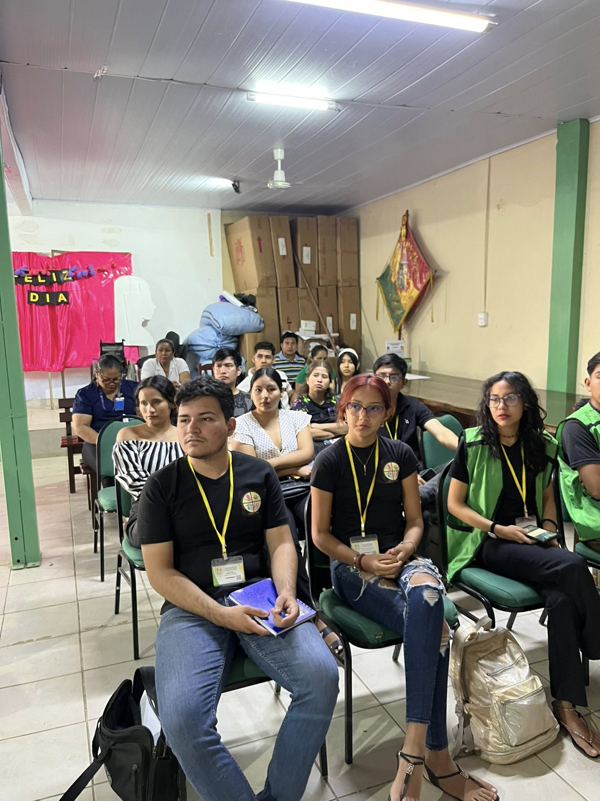
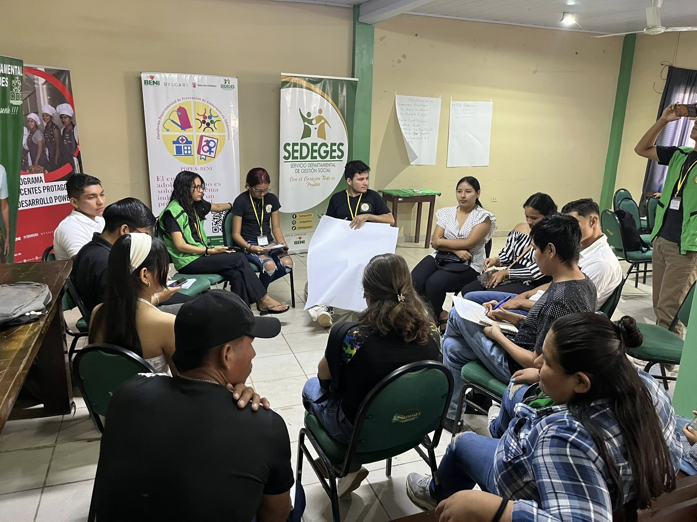
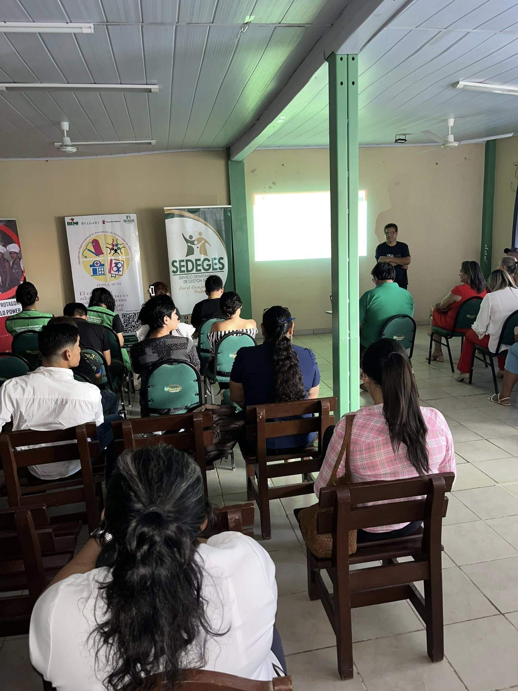

Feria De Concientización Para La Prevención De Embarazos Adolescentes


Se llevó a cabo la 1ra Feria de Concientización para la Prevención de Embarazos en Adolescentes, un evento clave que reunió a varias instituciones comprometidas con esta causa.
Reestructuración PDPEAJ-BENI

La PDPEAJ-BENI vivió un proceso de reestructuración en el que se integro a diferentes adolescentes de diferentes unidades educativas de la ciudad de Trinidad, comprometidos con la causa. En donde además se eligió una nueva mesa directiva, quienes asumieron el compromiso de realizar actividades y acciones que promuevan la prevención de embarazos adolescentes y la educación sexual integral en el departamento del Beni.
Plataforma Nacional


La PDPEAJ-BENI viajó hasta la ciudad de La Paz en donde convivió con el resto de Plataformas Departamentales, donde se creó un espacio de diálogo donde se compartieron experiencias, se fortalecieron lazos y se establecieron estrategias conjuntas para abordar los desafíos comunes en la prevención de embarazos adolescentes a nivel nacional. Además de ello, se elaboró un plan de trabajo conjunto que cada plataforma tendrá que llevar a cabo durante su gestión, asegurando un enfoque coordinado y efectivo en la promoción de la salud y el bienestar juvenil. Creando de esa forma la Plataforma Nacional de Prevención de Embarazos Adolescentes y Jóvenes, seleccionando a un miembro de cada plataforma para de esa forma crear la mesa directiva nacional y consolidando la Plataforma Nacional de Prevención de Embarazos Adolescentes y Jóvenes.
Corso Preventivo


El 03 de marzo de 2025 en la ciudad de La Santísima Trinidad, se realizó el Corso Prevensivo Trinitario, donde la Plataforma de Prevención de Embarazos Adolescentes y Jóvenes del Beni (PDPEAJ-BENI) participó activamente en conjunto con otras instituciones como la Dirección Departamental de Juventudes, SEDEGES, AIDAJ, Defensoría del Pueblo, entre otras. Donde no solo se entregó condones, sino que también se brindó información acerca de cómo usarlos correctamente, además de brindar información acerca de la prevención de enfermedades de transmisión sexual (ETS), promoviendo así una cultura de responsabilidad y autocuidado entre los jóvenes, demostrando que la diversión puede ir de la mano con la responsabilidad.
Ciclo Webinar





La Plataforma de Prevención de Embarazos Adolescentes y Jóvenes del Beni (PDPEAJ-BENI), en colaboración con las Plataformas Departamentales de: La Paz y Potosí, se realizaron webinars sobre relaciones de pareja, comunicación y vínculos sanos, promoviendo el bienestar emocional de los jóvenes. Donde nuestros panelistas compartieron sus conocimientos y experiencias, brindando herramientas prácticas para que los jóvenes puedan construir relaciones saludables y respetuosas. Estos webinars fueron una oportunidad para que los jóvenes aprendieran sobre la importancia de la comunicación efectiva, el respeto mutuo y la construcción de vínculos sanos en sus relaciones personales. Además, se abordaron temas como la gestión de emociones, la resolución de conflictos y el fortalecimiento de la autoestima, brindando herramientas útiles para el desarrollo integral de los participantes.
Presentación Oficial


Después de la reestructuración de la PDPEAJ-BENI, algunos miembros se retiraron de la plataforma y dejo varios puestos vacios. Es por ello que se realizó una integración de nuevos adolescentes y jóvenes de diferentes unidades educativas y universidades de la ciudad de La Santísima Trinidad, comprometidos con la causa. Presentandose de manera oficial en el Salón Bandera de la Gobernación.
Consejo Departamental de la Juventud


La PDPEAJ-BENI participó activamente en el evento "Construyendo Propuestas por Nuestros Derechos", un Encuentro Departamental de Jóvenes del Beni impulsado por el Servicio Departamental de Gestión Social (SEDEGES-Beni), en coordinación con la Dirección Departamental de Juventudes, la ONG Save the Children, CIPCA, Fondo de Población de las Naciones Unidas (UNFPA), Bvlgari y POWER 4 AY. Este espacio reunió a 45 adolescentes y jóvenes de 14 municipios del departamento y del Gobierno Indígena Autónomo Territorio Indígena Multiétnico (GIA-TIM). Además, se eligió democráticamente la nueva directiva del Consejo Departamental de la Juventud del Beni, quedando conformada por:
Taller "Alza Tu Voz"


Este taller implementado por UNICEF y SIESAR, tuvo como objetivo hacer conocer las necesidades que tenian los jóvenes al acceder a un centro AIDAJ. La Plataforma siendo parte de este taller, expreso las necesidades que tienen los jóvenes y la de los mismos integrantes de la plataforma para acceder a un centro AIDAJ y como es que se puede mejorar este acceso.
Bolsa de Empleo juvenil 2025


La PDPEAJ-BENI participo en los tallleres de Bolsa de Empleo Juvenil 2025, donde se brindaron herramientas y recursos para mejorar la empleabilidad de los jóvenes en el mercado laboral. Estos talleres fueron una oportunidad para que los jóvenes adquirieran habilidades prácticas y conocimientos sobre cómo buscar empleo, preparar un currículum vitae efectivo y enfrentar entrevistas de trabajo con confianza. La participación de la plataforma en estos talleres demuestra su compromiso con el desarrollo integral de los jóvenes, no solo en términos de prevención de embarazos adolescentes, sino también en su crecimiento personal y profesional. Al empoderar a los jóvenes con estas habilidades, la PDPEAJ-BENI contribuye a su autonomía y capacidad para tomar decisiones informadas sobre su futuro laboral y personal. Ademas de que no solo se abarco el tema de empleabilidad, sino que tambien se toco el tema de salud sexual y reproductiva, derechos sexuales y derechos reproductivos, lo cual es un tema de gran importancia para la plataforma.
Taller “Juventudes con Voz y Poder”


Durante este taller que fue desarrollado por la organización Coomujer, se abordaron temas fundamentales como derechos sexuales y derechos reproductivos y la igualdad de género. La participación de la PDPEAJ-BENI en este taller refleja su compromiso con la promoción de una sexualidad responsable y el empoderamiento de los jóvenes para que puedan tomar decisiones informadas sobre su salud sexual y reproductiva. Además, el enfoque en la igualdad de género es crucial para desafiar los estereotipos y roles de género que a menudo limitan las oportunidades y el desarrollo de los jóvenes. Al participar en este taller, la plataforma no solo fortalece sus conocimientos y habilidades en estos temas, sino que también contribuye a crear una comunidad más consciente y comprometida con la salud y el bienestar de sus miembros.
Proyecto de Ley de Prevención de Embarazo adolescente y Joven





La Dirección Departamental de Juventudes en coordinación con el SEDEGES - Beni a través de su
programa POWER 4AY, la ONG Save The Children y la Plataforma Departamental de prevención de
embarazos en adolescentes y jóvenes del Beni llevaron adelante un ciclo de mesas de trabajo y
talleres de socialización de políticas públicas, con el objetivo de elaborar y socializar el
Proyecto de Ley Departamental de Prevención de Embarazo en Adolescentes y Jóvenes.
Esta jornada de diálogo y análisis contaron con la participación activa de autoridades
legislativas, representantes juveniles, organizaciones sociales, profesionales del área de salud
y diversas instituciones aliadas, quienes aportaron sus conocimientos y puntos de vista técnicos
y sociales. Durante estos espacios se generó un intercambio enriquecedor de ideas, permitiendo
recoger opiniones, propuestas y observaciones que contribuyen a construir una normativa más
inclusiva y representativa de las verdaderas necesidades de los jóvenes del departamento.
En este espacio de diálogo, la plataforma y las organizaciones participantes
expresaron la alarmante cantidad de embarazos en adolescentes que el departamento del Beni
tiene, y cómo es que se puede trabajar en conjunto para reducir esta cifra.
Es por ello que se propuso el Proyecto de Ley de Prevención de Embarazo adolescente y
Joven, donde se recogieron los insumos y el diálogo acerca de las políticas públicas
para llevar a cabo este proyecto de ley. La propuesta de ley tiene como objetivo principal
establecer políticas y estrategias claras para abordar la problemática de los embarazos en
adolescentes, promoviendo la educación sexual integral, el acceso a métodos anticonceptivos y el
fortalecimiento de los servicios de salud sexual y reproductiva.
Estas acciones reflejan el compromiso de la Dirección de Juventudes, la PDPEAJ-BENI y los
aliados estratégicos
con una gestión participativa, inclusiva y enfocada en dar voz a las nuevas generaciones,
quienes son el presente y el futuro de nuestra sociedad. La participación activa de la
PDPEAJ-BENI en este proceso demuestra su compromiso para que los adolescentes y jóvenes de todo
el departamento del Beni tengan acceso a una educación sexual integral y a servicios de salud
adecuados, contribuyendo así a la reducción de embarazos no deseados y al empoderamiento de los
jóvenes en la toma de decisiones informadas sobre su salud y bienestar.
Feria en conmemoración al Día Mundial contra la Trata y Trafico de personas


En el marco del Día Mundial contra la Trata de Personas, la Dirección Departamental de
Juventudes, junto a la Plataforma Departamental de Prevención de Embarazos en Adolescentes y
Jóvenes del Beni y en coordinación con el SEDEGES, participaron activamente en la Feria
Interdisciplinaria organizada por el Concejo Departamental de lucha contra la Trata y Tráfico de
Personas y delitos conexos, realizada en la plaza principal de la ciudad de La Santísima
Trinidad.
Durante la jornada, se compartieron herramientas, experiencias
y conocimientos útiles para adolescentes y público en general. Las actividades abordaron temas
sensibles como la salud sexual, la prevención de embarazos y el ejercicio pleno de los derechos
juveniles, de forma didáctica y cercana. Se brindó información sobre cómo prevenir situaciones
de trata y tráfico de personas y cómo ayudar a quienes han sido víctimas, contando con material
informativo y el apoyo institucional necesario.
José Francisco Apaza Molina, director departamental de
Juventudes, remarcó que la feria quedará plasmada como testimonio del compromiso juvenil. Paula
Melgar, técnico responsable de Juventudes en Trinidad, destacó la coordinación con el SEDEGES
para visibilizar la Ley Departamental de Juventudes N°75 y fortalecer su aplicación en espacios
juveniles, subrayando el compromiso compartido con la plataforma para reducir los índices de
embarazos adolescentes mediante información clara y estrategias comunitarias.
Carlos Yver Justiniano Mariscal, secretario de actas de la
Plataforma, resaltó la importancia de dialogar directamente con los jóvenes, brindarles
orientación sobre métodos anticonceptivos y facilitar el acceso a recursos que favorezcan
decisiones informadas, promoviendo el autocuidado y la responsabilidad.
La feria interdisciplinaria reflejó el trabajo conjunto de las instituciones y la plataforma,
abarcando tanto la temática de trata y tráfico de personas como la promoción de derechos
sexuales y reproductivos, y la difusión de la Ley Departamental de Juventudes N°75.